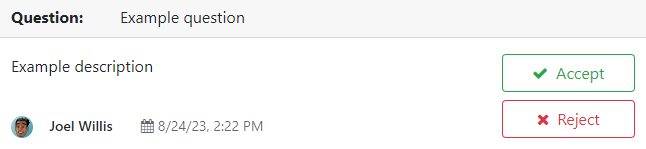

Forum¶
Odoo Forum is a question-and-answer forum designed with providing customer support in mind. Adding a forum to a website enables you to build a community, encourage engagement, and share knowledge.
Create a forum¶
To create or edit a forum, go to . Click New or select an existing forum and configure the following elements.
Forum Name: add the name of the forum.
Mode: select Questions to enable marking an answer as best, meaning questions then appear as solved, or Discussions if the feature is not needed.
Note
Regardless of the selected mode, only one answer per user is allowed on a single post. Commenting multiple times is allowed, however.
Default Sort: choose how questions are sorted by default.
Newest: by latest question posting date
Last Updated: by latest posting activity date (answers and comments included)
Most Voted: by highest vote tally
Relevance: by post relevancy (determined by a formula)
Answered: by likelihood to be answered (determined by a formula)
Note
Users have several sorting options (total replies, total views, last activity) on the forum front end.
Privacy: select Public to let anyone view the forum, Signed In to make it visible only for signed-in users, or Some users to make it visible only for a specific user access group by selecting one Authorized Group.
Next, configure the karma gains and the karma-related rights.
Karma points¶
Karma points can be given to users based on different forum interactions. They can be used to determine which forum functionalities users can access, from being able to vote on posts to having moderator rights. They are also used to set user ranks.
Important
A user’s karma points are shared across all forums, courses, etc., of a single Odoo website.
eLearning users can earn karma points through different course interactions and by completing quizzes.
Karma gains¶
Several forum interactions can give or remove karma points.
Interaction |
Description |
Default karma gain |
|---|---|---|
Asking a question |
You post a question. |
2 |
Question upvoted |
Another user votes for a question you posted. |
5 |
Question downvoted |
Another user votes against a question you posted. |
-2 |
Answer upvoted |
Another user votes for an answer you posted. |
10 |
Answer downvoted |
Another user votes against an answer you posted. |
-2 |
Accepting an answer |
You mark an answer posted by another user as best. |
2 |
Answer accepted |
Another user marks an answer you posted as best. |
15 |
Answer flagged |
A question or an answer you posted is marked as offensive. |
-100 |
Note
New users receive three points upon validating their email address.
To modify the default values, go to , select the forum, and go to the Karma Gains tab. Select a value to edit it.
If the value is positive (e.g., 5), the number of points will be added to the user’s tally each
time the interaction happens on the selected forum. Conversely, if the value is negative (e.g.,
-5), the number of points will be deducted. Use 0 if an interaction should not impact a user’s
tally.
Gamification¶
Ranks and badges can be used to encourage participation. Ranks are based on the total karma points, while badges can be granted manually or automatically by completing challenges.
Ranks¶
To create new ranks or modify the default ones, go to and click New or select an existing rank.
Add the Rank Name, the Required Karma points to reach it, its Description, a Motivational message to encourage users to reach it, and an image.
Badges¶
To create new badges or modify the default ones, go to and click New or select an existing badge.
Enter the badge name and description, add an image, and configure it.
Assign manually¶
If the badge should be granted manually, select which users can grant them by selecting one of the following Allowance to Grant options:
Everyone: all non-portal users (since badges are granted from the backend).
A selected list of users: users selected under Authorized Users.
People having some badges: users who have been granted the badges selected under Required Badges.
It is possible to restrict how many times per month each user can grant the badge by enabling Monthly Limited Sending and entering a Limitation Number.
Assign automatically¶
If the badge should be granted automatically when certain conditions are met, select No one, assigned through challenges under Allowance to Grant.
Next, determine how the badge should be granted by clicking Add under the Rewards for challenges section. Select a challenge to add it or create one by clicking New.
Tip
It is possible to give the badge a Forum Badge Level (Bronze, Silver, Gold) to give it more or less importance.

Use a forum¶
Note
Access to many functionalities depends on a user’s karma points.
Post questions¶
To create a new post, access the forum’s front end, click New Post, and fill in the following:
Title: add the question or the topic of the post.
Description: add a description for the question.
Tags: add up to five tags.
Click Post Your Question.
Interact with posts¶
Different actions are possible on a post.
Mark a question as favorite by clicking the star button (☆).
Follow a post and get notifications (by email or within Odoo) when it is answered by clicking the bell button (🔔).
Vote for (up arrow ▲) or against (down arrow ▼) a question or answer.
Mark an answer as best by clicking the check mark button (✔). This option is only available if the Forum Mode is set to Questions.
Answer a question.
Comment on a question or answer by clicking the speech bubble button (💬).
Share a question on Facebook, Twitter, or LinkedIn by clicking the share nodes button.
Click the ellipsis button (…) to:
Edit a question or answer.
Close a question.
Delete a question, answer, or comment. It is possible to Undelete questions afterward.
Flag a question or answer as offensive.
Convert a comment into an answer.
View the related Helpdesk ticket, if any.

Note
By default, 150 karma points are required to view another user’s profile. This value can be configured when creating a new website.
Moderate a forum¶
On the forum’s front end, the sidebar’s Moderation tools section gathers the essential moderator functionalities.

To Validate: access all questions and answers waiting for validation before being displayed to non-moderator users.
Note
A question is pending if a user does not have the required karma. The user is not able to post questions or answers while awaiting validation. Only one pending question per user is allowed per forum.
Flagged: access all questions and answers that have been flagged as offensive. Click Accept to remove the offensive flag or Offensive to confirm it, then select a reason and click Mark as offensive. The post is then hidden from users without moderation rights, and 100 karma points are deducted from the offending user’s tally.

Closed: access all questions that have been closed. It is possible to Delete or Reopen them. To close a question, open it, click the ellipsis button (…), then Close, select a Close Reason, and click Close post. The post is then hidden from users without moderation rights.
Note
When selecting Spam or advertising or Contains offensive or malicious remarks as the reason, 100 karma points are deducted from the poster’s tally.
Tip
Create and edit close reasons by going to . Select Basic as Reason Type if the reason should be used when closing a question, and Offensive if it should be used for flagged posts.
Manage all posts by going to , selecting the forum, and clicking the Posts smart button. By clicking the Actions button, it is possible to Export, Archive, Unarchive, or Delete one or multiple posts.